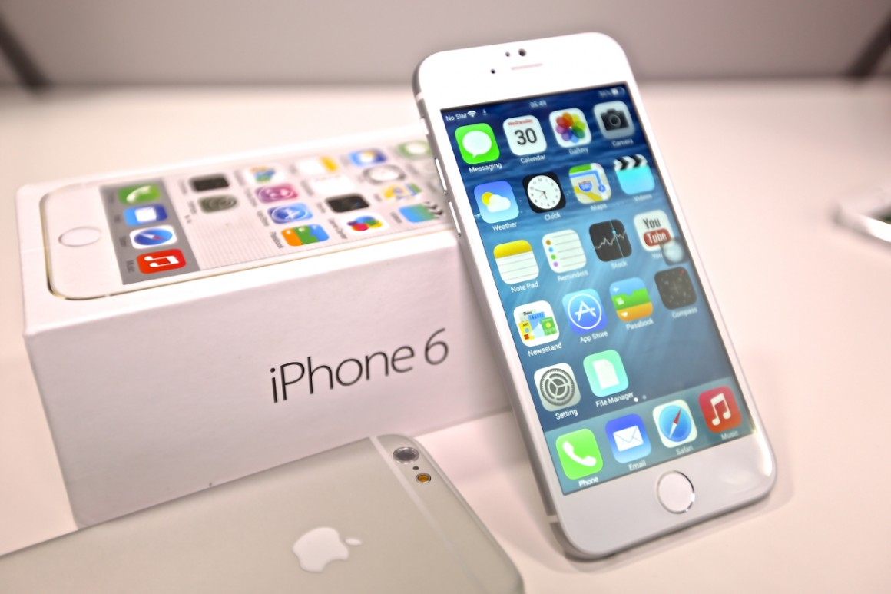

自iPhone 3G开始，苹果公司基本保持着两年一次大革新的节奏，于是今年9月，我们看到了屏幕增大，外观全新设计的iPhone 6和iPhone 6 Plus。在内在方面，苹果公司在这款手机加入了更新的A8处理器、M8协处理器，以及配合Apple Pay移动支付而加入的NFC功能。

可以说，相对iPhone 5到5s的改变，这次的iPhone 6是一次大升级。从发布会当晚新浪手机的直播情况，也能明显体会到人们对iPhone 6的关注。
在正式发售之前，4.7英寸版本iPhone 6零售版已经来到新浪手机。我们为您讲一讲它的实际使用体验。
"苗条紧致"的机身：
相比于之前的历代iPhone，iPhone 6终于变宽了，相对于5和5s也更长了，因此屏幕增加到了4.7英寸。由于目前安卓手机都集中在5英寸或者更大，经过我们对30位同事的调查，他们看到真机后绝大多数都认为4.7英寸的iPhone 6机身体积可以接受，不会觉得大。

刚刚拿到iPhone 6之后，所有人都几乎说出了同样的话"太轻了、太薄了"，这台6.9毫米厚度的手机确实让人觉得惊讶，并且保持了129克的重量，机身可以用"苗条"来形容。当你适应了它的薄之后，手感还是相当舒适的。


iPhone 6的整机一体性很好，屏幕外覆盖着有弧度的抛光玻璃让iPhone 6变得光滑圆润，并且屏幕与弧形金属边框的连接也非常自然，对提升手感帮助很大。用玻璃和金属做到如此的整体美感和质感，也许只有苹果能做出来了。 并且，这样的屏幕设计使得点亮后，屏幕显示的内容有"漂浮"在整机表面的精致感。

由于机身变长，侧面的音量键加长以方便操作，电源键被挪到了机身右侧，刚开始可能会不太适应。我们手里这台机器的音量键和电源键、以及HOME键手感都偏硬。与此同时，考虑到单手操作，新增了双击Touch ID区域就可以进入让屏幕下拉进入单手模式的"便捷访问"功能。

机身背部整体都采用了阳极氧化金属，只是上下用来覆盖天线的带状区域略宽，我们手里的白色机器背部的灰色带状区域已经略显突兀，通过在发布会当天在现场对三款机型的体验，金色则更加突兀，深空灰色会相对最自然；虽然这么说，相信金色还是大多数国人的选择。


这个带状区域也和凸起的摄像头一起，成为iPhone 6被人吐槽的两大热点，这也是苹果为了iPhone 6的手机信号和拍照效果做出的妥协。
屏幕细节改进：
9月10日的发布会上，苹果公司CEO库克开场便宣布两款iPhone发布，与此前曝光的外观及参数几乎一致，或许唯一意外的，是两款iPhone同时到来：一个屏幕为4.7英寸，另一个5.5英寸。今天来到新浪手机的是4.7英寸版，屏幕比上一代(iPhone 5s，4英寸屏，1136x640像素)增大了，分辨率也有所提升，只是从像素密度上看，4.7英寸1334x750像素的326PPI跟5s一样。
苹果官网上iPhone 6的广告语是"岂止于大"，苹果公司想表达的，是这代iPhone方方面面的改进，而最浅显、也是最容易让人注意的的一点，便是屏幕面积的增大。
近两年，安卓厂商们纷纷在硬件上发力，iPhone 4之后，苹果在手机屏幕尺寸和分辨率(像素密度)参数上已经没优势，但326PPI这个像素密度也已经达到人眼的阙值，不拿放大镜的话，4.7寸iPhone 6的326PPI比较1080P屏幕的441PPI清晰度区别没那么明显。


PPI影响的清晰度，但已经超过了肉眼分辨能力。其他因素对屏幕感官的影响会更明显一点，所以屏幕在iPhone 6身上用了另一些方式提升感官体验。
iPhone 6和iPhone 6 Plus的屏幕被苹果描述为"更大尺寸、更高分辨率的全新Retina HD高清显示屏"，而具体优势，则可以归结为：更高的对比度，更广阔视角，更真切色彩，以及偏振光片的加入。
更高的对比度：苹果使用了一种光定向技术，用紫外线来控制显示屏中液晶的位置，使它们更准的确排列在应有的地方。如此，可以让黑色更显深邃，文字更清晰明锐，从而提升视觉体验。
更广阔视角：在发布会上，苹果在介绍iPhone 6屏幕时候提到了"双域像素(dual domain pixels)"，但并未多做说明。这项技术其实并不算第一次用，LG公司在2011年推出AH-IPS显示技术的时候也提到过，2012年的HTC One X及2013年的HTC One一代屏幕都用过此技术。与常规液晶像素的不同是，双域像素指的是像素电极并非全部对齐，排列是扭曲的，"倾斜"的子像素可以在非平均光源状况下表现更好，以达到视角更好的目的。

更真切色彩：近期手机厂商喜欢用"色域(Color Gamut)"覆盖范围来谈手机屏幕的好坏。iPhone 6覆盖全sRGB色彩标准，但其实很多手机都能达到此标准，使用super AMOLED材质屏幕的三星S5在专业模式下甚至可以达到137%，这个参数的意义已经不大。
所以还是说说实际体验吧，将iPhone 6与iPhone 5s进行比较，实际的结果是色彩区别微小，甚至在拍屏幕的时候，如果不离的很近基本看不出区别。

偏振光片：按苹果官网的说法"总有些时候，你需要在阳光下使用它"，如果你现在手里有iPhone 5s，戴上墨镜就会看到屏幕亮度大幅降低，影响感官。所以苹果在LCD显示屏和表层玻璃之间加入了一层偏振光片(镀膜涂层)，比较通俗的解释：它的作用类似百叶窗，对光线具有遮蔽和透过功能，让屏幕在戴墨镜的情况下也能清楚看到。

具体到使用体验，当iPhone 6与5s都开到最大屏幕亮度，同一界面，戴墨镜看iPhone 6会比5s或5c显得清晰一点；若是偏光墨镜，看5s会有一层肥皂泡一样五颜六色的眩光，但iPhone 6不会。

这就是这层偏振光片起的作用，是苹果考虑在戴墨镜这个特定使用场景下提升屏幕感官所做的优化。相对前面几点，偏振片的效果倒是更明显一点。
除了液晶本身，苹果公司也在屏幕外层做了改进，他们首次在iPhone上加入了2.5D弧形玻璃，这设计曾在诺基亚N9手机上使用过。iPhone 6的UI交互并没有手指"从屏幕外滑入屏幕内"这种操作，但弧形玻璃无疑比之前的直角玻璃手感更舒适。所以说，弧形玻璃的功能更多体现在提升手感而不是功能层面，但它也确实为这款手机带来了用户体验的提升。
硬件和性能：
iPhone 6使用了20纳米工艺的1.4GHz双核64位的A8中央处理器、M8协处理器，这次苹果官网上的性能还是比初代iPhone对比，可见其性能提升相对于5s并非革命性。

使用GeekBench可以看出其RAM仍为1GB，测试成绩单核和多核分数为1630和2921，相比于iPhone 5s A7处理器的数据单核1383、多核2541，单核提升17.86%、多核提升14.95%。
 但在数据的背后，A8处理器中内置了全新视频编码器和图像信号处理器，可以为相机和视频功能提供支持，同时苹果的全新Metal引擎可以充分发挥A8处理器和iOS 8的图形性能，相信随着Metal游戏的增多，iPhone 6的性能优势会更明显的体现出来。
但在数据的背后，A8处理器中内置了全新视频编码器和图像信号处理器，可以为相机和视频功能提供支持，同时苹果的全新Metal引擎可以充分发挥A8处理器和iOS 8的图形性能，相信随着Metal游戏的增多，iPhone 6的性能优势会更明显的体现出来。
网络制式：
我们此次测试的机型是某国家的零售版iPhone 6 A1586，从苹果官网其支持的网络制式列表来看，可谓"全网通"：
CDMA EV-DO Rev. A (800, 1700/2100, 1900, 2100 MHz)
UMTS (WCDMA)/HSPA+/DC-HSDPA (850, 900, 1700/2100, 1900, 2100 MHz)
TD-SCDMA 1900 (F)， 2000 (A)
GSM/EDGE (850, 900, 1800, 1900 MHz)
FDD-LTE (频段 1, 2, 3, 4, 5, 7, 8, 13, 17, 18, 19, 20, 25, 26, 28, 29)
TD-LTE (频段 38, 39, 40, 41)
经过实际测试，这台A1586支持联通4G(无法分辨其连接的是TD-LTE还是FDD-LTE网络)、移动4G、电信UIM卡插入后闪过一次"中国电信 1X"后接着显示"无服务"无法识别。不过还是大家请以正式上市的各地区版本为准。


系统特别功能：
在发布会上，苹果公司花了大篇幅时间讲解了自己的移动支付功能Apple Pay，它是一系列软硬件结合，支付环境也要成熟之后才能实现的功能。但在iPhone 6中，除了Passbook图标上多了个信用卡标识，用户感觉不出来太多，包括iPhone 6中加入的NFC功能，你在系统或控制中心找不到NFC开关，这和现在的安卓手机大不一样。
我们相信，即便有NFC，因为涉及支付这样的关键问题，苹果也不会开放端口，所以期待iPhone 6可以像安卓手机那样相互一碰就能用NFC传输数据的网友，可以暂时断了这个念头了。苹果有自己的AirDrop，那才是他们的无线传输方案。


另外一点是单手操作问题，屏幕大了势必导致拇指没法碰到屏幕对角的"返回"，所以苹果在系统辅助功能中加入了"便捷访问"这个选项，打开之后，手指轻拍两下home键(不用按下去)，屏幕会下沉三分之一，剩余面积足够单手操作，十秒左右无操作自动恢复全屏。其实此功能在一些安卓手机里早有，只不过在iPhone上似乎更顺滑一点。但这项功能并不完美，比如在拨号界面它也能用，输入数字手按不到拨号键。


应用适配问题：
从iPhone 3GS到iPhone 4，以及后面的iPhone 5，每次iOS产品屏幕分辨的改变都会引起应用的短期不适配，这次也是一样的。在4.7英寸版本iPhone 6的很多应用，都可以看到字体发虚的情况，但并不影响使用。
回想iPhone 4s跨越到5，很多应用上下都留有黑边，但iOS生态系统的优势正在于能快速跟进，相信开发者们解决不匹配的问题不会用很多时间。

拍照：相比iPhone 5s提升并不明显
此次iPhone 6并没有如传闻所说提升像素数，而仍旧"固执"采用800万像素，目前还不确定是否依然是索尼的IMX145传感器，单个像素面积1.5微米，光圈与iPhone 5s一样仍旧为f/2.2。
而由于iPhone 6整体机身厚度的下降，也导致镜头模组从背部的凸起，为了保护镜头，镜头外围包裹了一圈更高的不锈钢金属圈，这是可以说是首款镜头突出的iPhone，从2007年开始，也是为了机身厚度不得已做的妥协。

不过此次iPhone 6采用了支持Focus Pixels的全新传感器，所谓"Focus Pixels"就是常说的"相位检测自动对焦"，而这也是相对于传统的反差对焦来说。官方宣称采用相位对焦的iPhone 6相比iPhone 5s的对焦速度快两倍。

反差对焦是根据交点处画面的对比度变化， 当对比度最大时也就是准确对焦的位置，所以在对焦过程中需要多次尝试，画面逐渐清晰，对比度也逐步上升，而当已经合焦状态时相机并不会停止，而是继续移动镜头，继而发现对比度开始下降找到峰值才知道已经错过合焦状态，从而退回对比度最高位置完成对焦。
而相位对焦则是一开始就可以直接通过相位检测的信号判断焦点位置，直接可以知道当前的位置在焦点前方还是后方，继而告诉镜片如何移动，而当在合焦状态下也会明确告诉所以省去了反差对焦的来来回回尝试对比度的过程，大大提升了对焦速度。
不过区别于iPhone 6 Plus，4.7英寸的iPhone 6并没有加入光学防抖系统，仍旧采用的是与iPhone 5s相同的自动图像防抖，也就是通过快速连拍四张照片，将其智能融合成一张，从而减少机身抖动以及移动物体的模糊。所以，这相比采用物理光学防抖系统的iPhone 6 Plus自然略有不足，后者是依靠镜头反向补偿手抖的物理位移保持图像稳定。
从实际拍照效果来说，对比了数张照片后我们发现iPhone 6与iPhone 5s的画质并无明显差别，无论色彩还原以及锐度方面可以说如出一辙。不过夜拍时倒是可以发现iPhone 6亮度会有一定幅度提升，同时在暗光区域彩噪减弱。


鉴于支持Focus Pixels的全新传感器，iPhone 6的对焦速度的确有明显提升，但并未达到苹果宣称的两倍之多。在同时触控对焦时，iPhone 5s还在放大、缩小对焦时，iPhone 6已经准确合焦，而这样的变化在连拍时会尤为明显。
另外还要强调一点的是，此次iPhone 6前置镜头加大了光圈，从f/2.4提升至f/2.2，配合全新的传感器技术，其可捕捉多达81%的光线。而在iOS 8中增加了手动曝光补偿调节杆，只需要轻触屏幕后上下滑动就可调节曝光补偿，以得到合适亮度的画面。
 iOS 8新增的手动曝光补偿调节杆
iOS 8新增的手动曝光补偿调节杆


编辑观点：
臧智渊：
iPhone的屏幕终于变大了！iOS终于提供了4.7英寸iPhone 6的选择，还有更大的5.5英寸iPhone 6 plus。外观方面，背部天线和摄像头凸起的妥协掩盖不了金属和玻璃材质"苗条紧致"机身的光芒。
此次iPhone 6系列的销量仍然不是问题，很多人真正纠结的是买4.7英寸还是5.5英寸，5.5的plus在电池、光学防抖和屏幕分辨率上要更优秀。个人认为4.7更适合平时随身携带使用，5.5则更适合偏爱特大屏幕手机的消费者，希望中国大陆早日上市。
另外值得提及的是，在系统中无法找到任意与NFC的相关功能如传图等、Apple Pay也并没有菜单。苹果用自己的方式使用了NFC，在美国发布会后的沟通中已经了解到苹果已经和中国相关机构开始接洽，希望Apple Pay能在中国内地早日付诸使用。
何金：
不可否认，当iPhone屏幕增大时将给苹果公司带来创纪录的订单量以及史无前例的关注度，但是我仍旧认为iPhone 6难有拨动心弦的杀手级功能，而这样的感觉从看完发布会到真机上手后更为强烈。
惯性地硬件升级似乎此次只体现在了处理器上面，而在流畅性压根不存在问题的iPhone 5s上面，iPhone 6的优势在体验上难觅踪影。更何况，指纹识别以及拍照的平行移植，更让这款手机的亮点屈指可数。
对于手机来说我一定是个"外貌协会"成员，正面的iPhone 6几乎无可挑剔，但背面粗壮的天线断层以及凸起的摄像头实在让人难以忽视。
总之，iPhone 6的4.7英寸屏幕还没有iPhone 5s当初的Touch ID带给我的兴奋感强烈，也许在国内Apple Pay商圈成熟后我的观点会发生变化。
郭晓光：
从iPhone 5s/5c到6，可以清晰看到两代iPhone的演进路线。苹果将5c的弧形边缘、5s的Touch ID指纹识别、以及64位处理器等技术演练纯熟之后终于将它用到了自己的大屏幕手机上，但也不得不承认，在性能、屏幕表现以及拍照方面，4.7寸版的iPhone 6与5s的差距比我们想象的小很多。
至于外观，旁观者总是能在效果图上找出"摄像头凸起""后背天线粗"等槽点，但真机拿在手上这些并没有想象的那么难以接受。
还记得iPhone 4或5发布时候喊丑现在喊经典的人吗？ 每次苹果都能创造新的审美习惯，目前的预定数量，其实已经说明了这款手机在人们心中的位置。